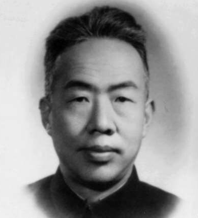

风云人物列表（单击查看）
- 我国空气动力学家，中国科学院、中国工程院院士，我国“两弹一星”功勋奖章获得者之一。
- 为我国的导弹和航天计划做出过重大贡献，被誉为“中国航天之父”和“火箭之王”。
- 我国航天事业的奠基人，受人尊敬的科学家。
- 在我国的发展和世界和平中发挥着重要作用的伟大科学家。

- 著名的科学家、气象学家、地球物理学家和空间物理学家，中国科学院院士。1933 年毕业于清华大学物理系，后留校任物理系助教。
- 1944年任中央研究院气象研究所代所长。
- 1947年任中央研究院气象研究所所长。
- 1950 年任中国科学院地球物理研究所所长；1955 年当选为中国科学院学部委员（院士）。
- 我国著名数学家，中国科学院院士。
- 我国解析数论、典型群、矩阵几何学、自守函数论与多元复变函数等方面研究的创始人与奠基者。
- 我国在世界上最有影响力的数学家之一。
- 芝加哥科学技术博物馆中的88位数学伟人之一。

- 我国著名地质学家，毕业于英国伯明翰大学，获博士学位。
- 首创地质力学，中国科学院院士。
- 我国现代地球科学和地质工作的主要领导人和奠基人。
- 2009年当选为100位新中国成立以来感动中国人物之一。